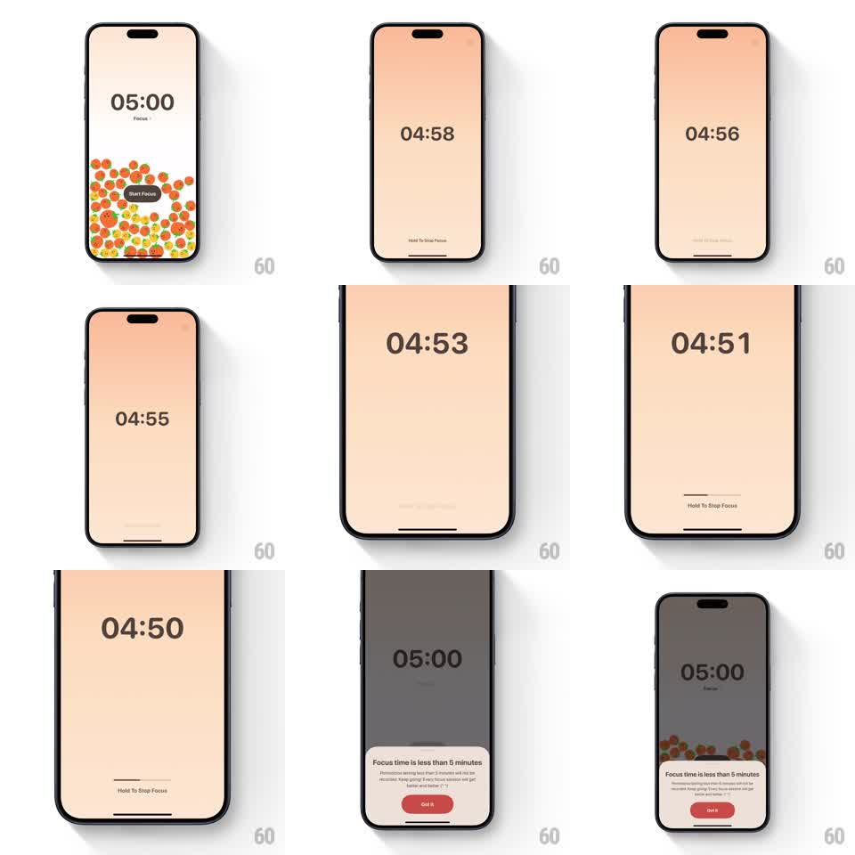

Media
Frame-by-frame

Rebuild this interaction 1:1: FocusPomo's active focus timer - ending a session early requires holding a "Hold To Stop Focus" button while a progress bar fills; completing the hold dims the screen and raises a bottom sheet warning that focus time is under 5 minutes.

Rebuild this interaction 1:1: FocusPomo's active focus timer - ending a session early requires holding a "Hold To Stop Focus" button while a progress bar fills; completing the hold dims the screen and raises a bottom sheet warning that focus time is under 5 minutes. ## Integration Integration: stack-agnostic spec - springs given as stiffness/damping, timed motions as duration + curve; map every value to your framework and animation library of choice. ## Scene Full-bleed warm peach gradient screen with a huge centered countdown (05:00 ticking down), small "Focus" label under it, and a bottom area with a thin progress track above the caption "Hold To Stop Focus". Release-hold guard: letting go early resets the fill. ## Motion spec Pattern: hold-to-confirm gesture with progress fill and consequential sheet. - Timer digits tick each second (plain swap, no animation). - On touch-down: the progress bar fills left to right linearly over ~1.2s; a subtle haptic at start and completion. - On release before full: bar drains back to empty over ~250ms, ease-in. - On fill complete: background dims to a dark scrim (opacity 0 -> 0.6, 250ms), bottom sheet slides up (spring ~300/30, ~350ms) with title "Focus time is less than 5 minutes", body copy, and a red filled "Got it" button. - Dismissing the sheet returns to the start screen (timer reset to 05:00, tomato illustration visible). ## Calibration - Hold duration ~1.2s - long enough to prevent accidents, short enough to not annoy. - The bar is the only feedback during the hold; keep the rest of the screen frozen. ## Reduced motion Hold still required; sheet fades in (200ms) without slide, scrim without animation. ## Don't miss - Release-before-full cancels and drains the bar - no partial completion state. - The sheet appears only after the hold completes, not on tap.